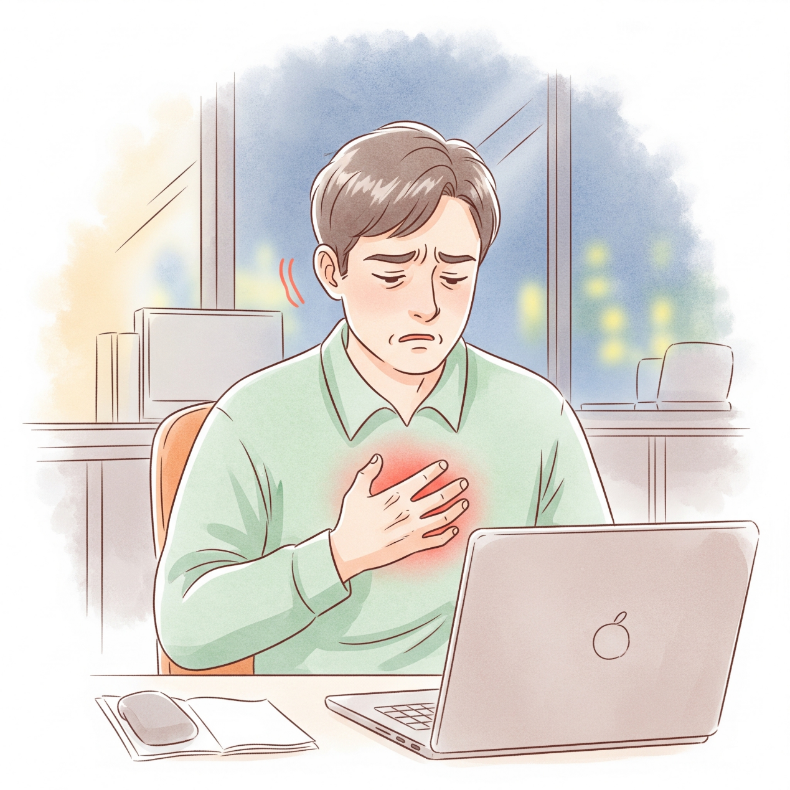

在金融業打滾了六年的小高（29歲），是同事眼中的拼命三郎。因為工作認真、績效優異，半年前他被賦予了更多責任，開始帶領新人。在會議上，他不僅常被主管公開表揚，更被頻頻指名發表意見。然而，表現越好，肩上的重擔也越沉。
兩個月前，小高開始負責更重要的客戶與大公司的鉅額投資案。上週三晚上九點，他如常在座位上加班。突然間，他感到心跳快到喘不過氣，正在鍵盤上打字的手抖到無法控制。
一開始，小高以為只是沒吃晚餐導致的低血糖。他趕緊回家，勉強吃了些宵夜後躺上床，卻開始感到強烈的胸悶。他強迫自己閉眼睡覺，到了半夜一點，卻被自己極大力的心跳聲驚醒。原本就淺眠的他，從此陷入了整夜的失眠。這樣令人恐懼的失控感，隔了三天後又再度襲來。
驚恐萬分的小高，急急忙忙地跑去大醫院的心臟科掛號。然而，在一連串的儀器檢查之後，只得到醫生委婉的一句話：「報告看起來都很正常，你只是壓力太大了。」
身心俱疲的小高，帶著這份無助來到了圓舞曲身心診所。醫師詳細評估了他的狀況，並為他安排了科學化的檢測與客製化療程。

我們首先為小高進行了 HRV（心率變異度）檢查。數據明確顯示：小高正處於「自律神經失調」的狀態，且自律神經系統嚴重偏向交感神經（處於極度緊繃、無法放鬆的戰鬥狀態）。這解釋了他為何會出現心悸、手抖與胸悶。
針對交感神經的過度活躍，傳統作法可能會開立鎮定類藥物。但小高表達了對依賴藥物的擔憂。因此，我們為他規劃了非藥物治療方案——每天使用 1 小時的 CES（經顱微電流刺激療法）。透過微弱電流調節大腦神經傳導物質，物理性地幫助大腦放鬆，溫和且無傳統藥物副作用。
針對小高最痛苦的嚴重失眠，我們理解他對於「安眠藥越吃越重」的恐懼。因此，醫師為他選擇了新一代助眠藥物。這類藥物能有效協助他度過這段急性的睡眠障礙期，同時大幅降低了傳統安眠藥的成癮與依賴風險。
經過一段時間的療程，小高不再被突如其來的心悸綁架，夜晚也能安心入睡。如果您也和小高一樣，正面臨高壓帶來的不適，擔心藥物依賴，請記得：身心科的治療早已進步，非藥物治療與精準用藥能給您更安全的選擇。